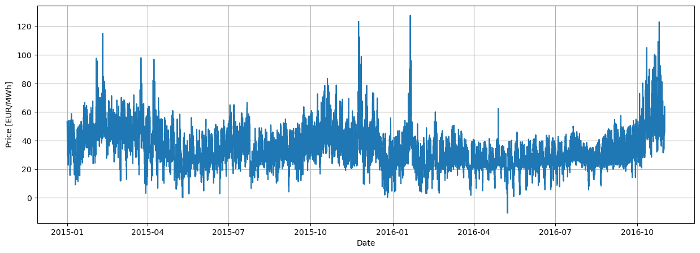
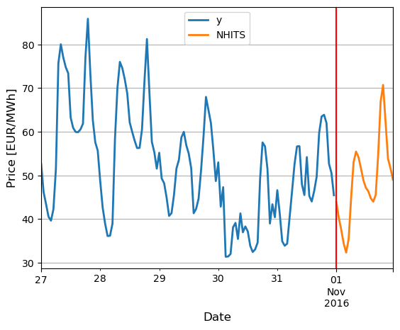

!pip install neuralforecastExogenous Variables
Exogenous variables can provide additional information to greatly improve forecasting accuracy. Some examples include price or future promotions variables for demand forecasting, and weather data for electricity load forecast. In this notebook we show an example on how to add different types of exogenous variables to NeuralForecast models for making day-ahead hourly electricity price forecasts (EPF) for France and Belgium markets.
All NeuralForecast models are capable of incorporating exogenous variables: \[\mathbf{\hat{y}}_{[t+1:t+H]} = F_\theta(\;\mathbf{y}_{[:t]},\; \mathbf{x}^{(h)}_{[:t]},\; \mathbf{x}^{(f)}_{[:t+H]},\; \mathbf{x}^{(s)})\]
where the regressors are static exogenous \(\mathbf{x}^{(s)}\), historic exogenous \(\mathbf{x}^{(h)}_{[:t]}\), exogenous available at the time of the prediction \(\mathbf{x}^{(f)}_{[:t+H]}\) and autorregresive features \(\mathbf{y}_{[:t]}\).
We will show you how to include exogenous variables in the data, specify variables to a model, and produce forecasts using future exogenous variables.
Important
This Guide assumes basic knowledge on the NeuralForecast library. For a minimal example visit the Getting Started guide.
You can run these experiments using GPU with Google Colab.

1. Libraries
import torchtorch.cuda.is_available()False2. Load data
The df dataframe contains the target and exogenous variables past information to train the model. The unique_id column identifies the markets, ds contains the datestamps, and y the electricity price.
Include both historic and future temporal variables as columns. In this example, we are adding the system load (system_load) as historic data. For future variables, we include a forecast of how much electricity will be produced (gen_forecast) and day of week (week_day). Both the electricity system demand and offer impact the price significantly, including these variables to the model greatly improve performance, as we demonstrate in Olivares et al. (2022).
The distinction between historic and future variables will be made later as parameters of the model.
import pandas as pd
import matplotlib.pyplot as pltdf = pd.read_csv('https://datasets-nixtla.s3.amazonaws.com/EPF_FR_BE.csv')
df['ds'] = pd.to_datetime(df['ds'])
df.head()| unique_id | ds | y | gen_forecast | system_load | week_day | |
|---|---|---|---|---|---|---|
| 0 | FR | 2015-01-01 00:00:00 | 53.48 | 76905.0 | 74812.0 | 3 |
| 1 | FR | 2015-01-01 01:00:00 | 51.93 | 75492.0 | 71469.0 | 3 |
| 2 | FR | 2015-01-01 02:00:00 | 48.76 | 74394.0 | 69642.0 | 3 |
| 3 | FR | 2015-01-01 03:00:00 | 42.27 | 72639.0 | 66704.0 | 3 |
| 4 | FR | 2015-01-01 04:00:00 | 38.41 | 69347.0 | 65051.0 | 3 |
Tip
Calendar variables such as day of week, month, and year are very useful to capture long seasonalities.
plt.figure(figsize=(15,5))
plt.plot(df[df['unique_id']=='FR']['ds'], df[df['unique_id']=='FR']['y'])
plt.xlabel('Date')
plt.ylabel('Price [EUR/MWh]')
plt.grid()
Add the static variables in a separate static_df dataframe. In this example, we are using one-hot encoding of the electricity market. The static_df must include one observation (row) for each unique_id of the df dataframe, with the different statics variables as columns.
static_df = pd.read_csv('https://datasets-nixtla.s3.amazonaws.com/EPF_FR_BE_static.csv')
static_df.head()| unique_id | market_0 | market_1 | |
|---|---|---|---|
| 0 | FR | 1 | 0 |
| 1 | BR | 0 | 1 |
3. Training with exogenous variables
We distinguish the exogenous variables by whether they reflect static or time-dependent aspects of the modeled data.
Static exogenous variables: The static exogenous variables carry time-invariant information for each time series. When the model is built with global parameters to forecast multiple time series, these variables allow sharing information within groups of time series with similar static variable levels. Examples of static variables include designators such as identifiers of regions, groups of products, etc.
Historic exogenous variables: This time-dependent exogenous variable is restricted to past observed values. Its predictive power depends on Granger-causality, as its past values can provide significant information about future values of the target variable \(\mathbf{y}\).
Future exogenous variables: In contrast with historic exogenous variables, future values are available at the time of the prediction. Examples include calendar variables, weather forecasts, and known events that can cause large spikes and dips such as scheduled promotions.
To add exogenous variables to the model, first specify the name of each variable from the previous dataframes to the corresponding model hyperparameter during initialization: futr_exog_list, hist_exog_list, and stat_exog_list. We also set horizon as 24 to produce the next day hourly forecasts, and set input_size to use the last 5 days of data as input.
from neuralforecast.auto import NHITS
from neuralforecast.core import NeuralForecast
import logging
logging.getLogger("pytorch_lightning").setLevel(logging.WARNING)horizon = 24 # day-ahead daily forecast
models = [NHITS(h = horizon,
input_size = 5*horizon,
futr_exog_list = ['gen_forecast', 'week_day'], # <- Future exogenous variables
hist_exog_list = ['system_load'], # <- Historical exogenous variables
stat_exog_list = ['market_0', 'market_1'], # <- Static exogenous variables
scaler_type = 'robust')]
Tip
When including exogenous variables always use a scaler by setting the scaler_type hyperparameter. The scaler will scale all the temporal features: the target variable y, historic and future variables.
Important
Make sure future and historic variables are correctly placed. Defining historic variables as future variables will lead to data leakage.
Next, pass the datasets to the df and static_df inputs of the fit method.
nf = NeuralForecast(models=models, freq='H')
nf.fit(df=df,
static_df=static_df)4. Forecasting with exogenous variables
Before predicting the prices, we need to gather the future exogenous variables for the day we want to forecast. Define a new dataframe (futr_df) with the unique_id, ds, and future exogenous variables. There is no need to add the target variable y and historic variables as they won’t be used by the model.
futr_df = pd.read_csv('https://datasets-nixtla.s3.amazonaws.com/EPF_FR_BE_futr.csv')
futr_df['ds'] = pd.to_datetime(futr_df['ds'])
futr_df.head()| unique_id | ds | gen_forecast | week_day | |
|---|---|---|---|---|
| 0 | FR | 2016-11-01 00:00:00 | 49118.0 | 1 |
| 1 | FR | 2016-11-01 01:00:00 | 47890.0 | 1 |
| 2 | FR | 2016-11-01 02:00:00 | 47158.0 | 1 |
| 3 | FR | 2016-11-01 03:00:00 | 45991.0 | 1 |
| 4 | FR | 2016-11-01 04:00:00 | 45378.0 | 1 |
Finally, use the predict method to forecast the day-ahead prices.
Y_hat_df = nf.predict(futr_df=futr_df)
Y_hat_df.head()Predicting DataLoader 0: 100%|██████████| 1/1 [00:00<00:00, 95.56it/s] | ds | NHITS | |
|---|---|---|
| unique_id | ||
| BE | 2016-11-01 00:00:00 | 36.936493 |
| BE | 2016-11-01 01:00:00 | 33.701057 |
| BE | 2016-11-01 02:00:00 | 30.956253 |
| BE | 2016-11-01 03:00:00 | 28.285088 |
| BE | 2016-11-01 04:00:00 | 27.118006 |
import matplotlib.pyplot as plt
plot_df = df[df['unique_id']=='FR'].tail(24*5).reset_index(drop=True)
Y_hat_df = Y_hat_df.reset_index(drop=False)
Y_hat_df = Y_hat_df[Y_hat_df['unique_id']=='FR']
plot_df = pd.concat([plot_df, Y_hat_df ]).set_index('ds') # Concatenate the train and forecast dataframes
plot_df[['y', 'NHITS']].plot(linewidth=2)
plt.axvline('2016-11-01', color='red')
plt.ylabel('Price [EUR/MWh]', fontsize=12)
plt.xlabel('Date', fontsize=12)
plt.grid()
In summary, to add exogenous variables to a model make sure to follow the next steps:
- Add temporal exogenous variables as columns to the main dataframe (
df). - Add static exogenous variables with the
static_dfdataframe. - Specify the name for each variable in the corresponding model hyperparameter.
- If the model uses future exogenous variables, pass the future dataframe (
futr_df) to thepredictmethod.
References
Give us a ⭐ on Github